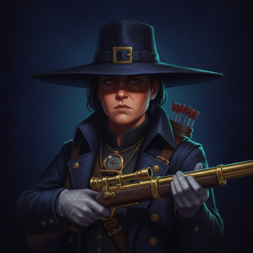

The kit
- P
Chalk and Memory
When an enemy champion leaves your team's vision, their last known position and heading are marked for 4s. They can see their own mark.
- Q
Sightline
Fire a brass beam down a line. The first champion hit is damaged and revealed, and is told they were revealed. It deals more damage the further it travelled, and a beam that passes one of your stakes continues from there.
- W
Benchmark
Plant a survey stake granting 6 units of vision for 90s, with two charges. It has 1 health, so anything destroys it, and pays 15 gold to whoever does.
- E
Backsight
Return to where you stood four seconds ago and remove all slows. The return point is drawn on the ground for both teams the whole time.
- R
The True North
Survey the field for 5s. Every enemy champion is revealed to your team and allies moving toward one gain movement speed. For the same 5s you are revealed to them.